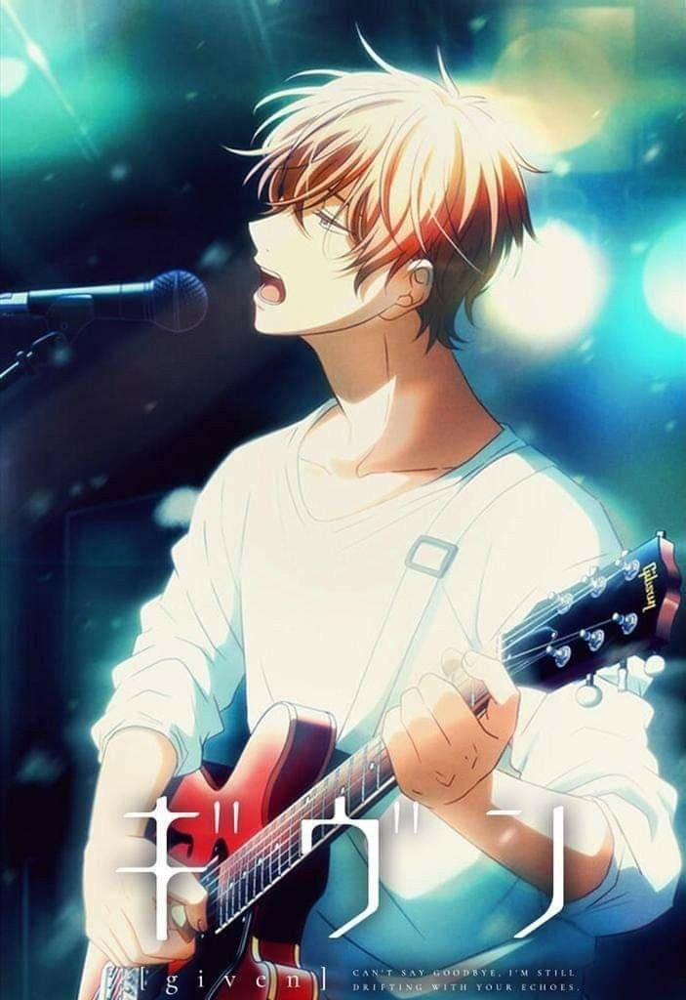

En general, las relaciones entre personajes son muy importantes en las historias que cuentan con un romance. Given no es una excepción, pero, a diferencia de la mayoría de las historias románticas, no se centra solo en la relación que uno pueda tener con su pareja, sino que también profundiza en cómo interactuamos con las cosas que nos importan. Ya sea un sueño, un pasatiempo o una persona especial, Given explora todas estas relaciones y las vincula con el crecimiento personal. La obra nos recuerda que el amor es multifacético y que nuestras relaciones con los demás están fuertemente influenciadas por nosotros mismos, nuestro pasado, nuestras metas y nuestras pasiones.
En 2019 se estrenó el anime de Given, que adapta el manga escrito e ilustrado por Natsuki Kizu. Los personajes y el romance juvenil, todo ello aderezado con buena música, encandilaron al público, que se quedó con ganas de ver más. Por eso no es de extrañar que el estudio Lerche anunciara poco después que estaba trabajando en una película, continuación directa de la serie y que adaptaría el volumen 5 de la obra.
Actualmente, la historia de Given está dividida en dos arcos. El primer arco, que se centra principalmente en la relación de Mafuyu y Ritsuka, sigue la formación de la banda Given (anteriormente The Seasons) y su camino hacia su primera actuación en vivo. El segundo arco, sigue la relación de Akihiko, Haruki y Ugetsu, mientras se preparan para su festival calificado de bandas, Haruki se enfrenta a un encuentro de sus sentimientos y de su pasiòn.
El estudiante de preparatoria Ritsuka Uenoyama es el guitarrista de The Seasons, una banda compuesta por el bajista Haruki Nakayama y el baterista Akihiko Kaji. Tras sus súplicas, Uenoyama se convierte en un renuente profesor de guitarra para Mafuyu Satō (un tímido compañero de instituto) después de reparar las cuerdas rotas de su Gibson ES-330. Ritsuka rápidamente se percata que Mafuyu es un cantante excepcionalmente talentoso, y lo invita a unirse a la banda sin tener en cuenta su pasado. Sin embargo, escuchar la canción de Mafuyu por casualidad deja una profunda impresión en Uenoyama.